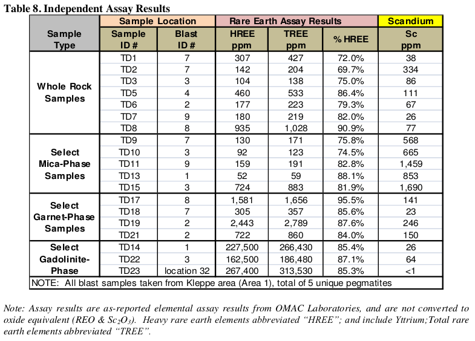
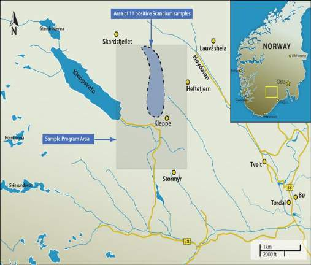
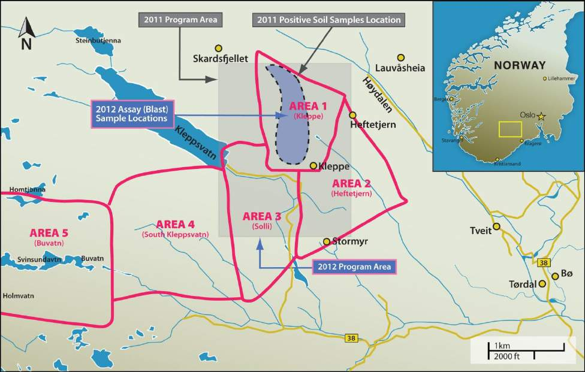

Scandium ScIMC 10K_2016.pdf
Tørdal Property During 2011 we entered into option agreements with REE Mining AS of Norway, to obtain exploration rights to several properties located in central and southern Norway. Based on exploration results and holding costs, the Tørdal property holding was retained but all other Norway properties were subsequently dropped. The Tørdal agreement was renegotiated to secure a 100% ownership position for SCY.
The 90 sq km Tørdal exploration property is prospective for a grouping of specialty metals, and rare earth elements, including scandium, yttrium, tantalum, beryllium, niobium, zirconium, titanium, lithium, nickel and tin. Certain of these metals are subject to Norwegian government controlled mineral rights and others are subject to landowner mineral rights. The Company has decided the lack of clarity in mineral rights control at Tørdal raises unacceptable risk to continuing forward with additional exploration at this time.
Accordingly, the Tordal property mineral exploration rights were not renewed in January 2017, and the Company has no further plans for the property at this time. Tørdal Property During 2011 we entered into option agreements with REE Mining AS of Norway, to obtain exploration rights to several properties located in central and southern Norway. Based on exploration results and holding costs, the Tørdal property holding was retained but all other Norway properties were subsequently dropped. The Tørdal agreement was renegotiated to secure a 100% ownership position for SCY. The 90 sq km Tørdal exploration property is prospective for a grouping of specialty metals, and rare earth elements, including scandium, yttrium, tantalum, beryllium, niobium, zirconium, titanium, lithium, nickel and tin.
The location of the Tørdal property is provided in Figure 6 below. Figure 6. Location of the Tørdal property 2012 Tørdal Field Exploration On February 14, 2013 we announced promising results from field exploration work on the Tørdal property during the summer and fall months of 2012, focussed on scandium-bearing pegmatites. The 2012 work included independent assay results of pegmatite rock samples taken from one specific property area, and also includes an extensive pegmatite mapping program covering approximately 30 sq km. The assay results indicated the presence of high levels of scandium and various rare earth elements (REE’s), including heavy rare earth elements (HREE’s) in particular. Field XRF readings indicated elevated scandium content in hundreds of large and small pegmatite bodies found and mapped in the reconnaissance area. Highlights of the results of the 2012 field exploration are as follows:
Tørdal 2012 assays of pegmatite rocks show presence of both scandium and REE’s; Best scandium assays exceed 1,600 ppm; Promising HREE assay results from pegmatites with gadolinite mineralization; Host rock mineralization points to higher grade scandium or HREE contents; 2012 summer exploration program mapped and sampled over 300 pegmatites; A total of 1,940 Niton XRF scandium readings were taken on whole rock samples; and Overall program results at Tørdal are very encouraging and warrant expanded exploration.
Assay Results of Grab Samples at Tørdal The 2011 summer exploration program on the Tørdal property consisted of reconnaissance, surface soil sampling, and limited pegmatite mapping work in a relatively small area north of the village of Kleppe, in Southern Norway. 37As a follow-on from that 2011 program, the company then returned to the same area and conducted a series of ‘blasts’, using small explosive charges to generate whole rock samples on select exposed pegmatites, at the locations of the best soil sample results. The exploration team planned 9 blasts and conducted 8, on 5 different pegmatite bodies, from which they assembled 23 grab samples for analysis and assay by OMAC Laboratories in Ireland. Assay results on these samples were received in Q1 2012— in time to help formulate the 2012 summer/autumn season pegmatite mapping program, conducted on a much wider area. Independent assay results on 20 of the 23 samples, covering all 5 targeted pegmatites, are shown below.
Table 8. Independent Assay Results Sample Location Rare Earth Assay Results Scandium Sample Blast HREE TREE Sc % HREE ID # ID # ppm ppm ppm TD1

NOTE: All blast samples taken from Kleppe area (Area 1), total of 5 unique pegmatites Sample Type Note: Assay results are as-reported elemental assay results from OMAC Laboratories, and are not converted to oxide equivalent (REO & Sc 2 O 3 ). Heavy rare earth elements abbreviated “HREE”; and include Yttrium;Total rare earth elements abbreviated “TREE”. The numbered assay samples were formed either by random selection of fresh (un-weathered) whole rock material broken loose from individual pegmatite bodies, or alternatively, based on selectively collecting fresh rock material that was clearly (1) garnet-laden, (2) mica-laden, or showed clear visible (3) gadolinite mineralization. Gadolinite is a beryllium and rare earth-bearing mineral with the chemical formula [(Ce,La,Nd,Y) 2 FeBe 2 Si 2 O 10 ]. The intent was to determine from assay results if certain visible mineralization correlated to the presence and concentrations of target elements; specifically scandium, rare earth elements (REE’s), or other metals of interest and value.
The results in the assay table indicate that all of the selected pegmatites contain interesting levels of both REE’s and scandium. In general, all of the pegmatites contained both target elements, while the mica phase appears to hold the higher scandium concentrations with small REE additions, and the gadolinite phase holds the highest REE concentrations and small scandium additions. The presence of garnet 38material in samples tended to generate interesting but moderate values for both REE’s and scandium. Assay work was designed to identify 30 specific elements, including all 16 REE elements plus scandium, and the relative concentration of heavy REE’s was of particular interest. The mica and garnet grab sample materials had generally only trace levels of thorium and uranium (average less than 15 ppm), while the gadolinite grab sample materials had thorium levels between 2,500-5,000 ppm, and uranium levels between 500-1,300 ppm.
A full table of OMAC assay results related to these 23 sample analyses is available on the Company website at www.scandiummining.com. Reconnaissance Results – Extended Pegmatite Mapping Program at Tørdal Following on from the 2011 work and the 2012 assay results, we conducted an expanded 2012 summer work reconnaissance program at both Tørdal and Evje-Iveland, from July through October. The goals of the 2012 program were to develop detailed mapping of outcropping pegmatite fields over a much broader area than the 2011 program, while also conducting field sampling of scandium mineralization on those pegmatites using a hand-held Niton XRF Analyzer. The 2012 program concentrated on five separate areas (approximately 30 sq km) as can be seen in the map below:

Figure 7. Map of the Extended Pegmatite Mapping Program at Tørdal A total of 1,940 Niton XRF readings were logged on whole rock and pegmatite mineral separates, logged against individually mapped and numbered pegmatite bodies. The XRF readings ranged up to +6,000 ppm scandium (on a mineral separate), and averaged 661 ppm on 1,504 total logged readings above the instrument’s 20 ppm detection limit. XRF readings focussed on scandium data collection only, although the team diligently noted the visible presence of gadolinite and amazonite mineralization. 39The reader is cautioned that hand-held Niton XRF readings are not the same as laboratory assays, and are not NI 43-101 compliant with regard to estimating resource grades. However, the Company is confident that these data readings are highly useful in confirming and shaping the next stage of the exploration program on this property. A summary of results by area is as follows:

Area 1 (Kleppe); Mapped more than 50 pegmatite bodies. Best average XRF Sc readings from 1,000-1,500 ppm, some very large surface expressions. Gadolinite present. Area 2 (Heftetjern); Partially mapped more than 40 pegmatite bodies, many large surface expressions, green amazonite mineralization. Better XRF Sc readings from 500-1,500 ppm. Area 3 (Solli); Mapped numerous large and small pegmatites. Generally lower XRF Sc readings, ranging 300-700 ppm. Red feldspars, quartz and gadolinite mineralization present. Area 4 (South Kleppsvatn); Partially mapped large area containing more than 80 pegmatites, generally mica-based. Typical XRF Sc readings in the 300-900 ppm range, with some reaching 1,500 ppm Sc. Area 5 (Buvatn); Partially mapped, numerous pegmatite bodies, some very large. Typical XRF Sc readings in the 300-1,000 ppm range. Old feldspar quarries, amonizite mineralization present.
Next Steps in Norway Exploration Program The Company mapping and sampling work has confirmed that much of the Tørdal property is heavily populated with complex, near-surface pegmatite bodies. Based on hand-held XRF readings and mineralogy, these pegmatites show excellent promise for significant scandium enrichment, particularly within bodies containing micas, and for REE mineralization where the rare earth silicate gadolinite is present. Based on the results of 2012 exploration work, planning for future exploration work is under consideration, but is dependent on the Company’s ability to adequately fund further exploration work. The priority project is the Nyngan Scandium Project, so funding for further exploration in Norway is specifically subject to adequate prior funding of Nyngan.
Qualified Person and Quality Assurance/Quality Control Sampling methods followed industry quality control standards. Mr. Kjell Nilsen, an independent geologist consultant currently employed by SCY, conducted the reconnaissance and sampling on the property. Individual whole rock grab samples were collected by hand shovel, from areas where blasted material could be seen to have come from blast points on pegmatite bodies. The assayed samples were individually bagged, sealed, logged on the grid map as to location, boxed in a container suitable for mailing, and sent by express mail to OMAC Laboratories Limited in Galway, Ireland for testing. Assay testing on the samples utilized an ICP-MS spectrometer (Inductively Coupled Plasma-Mass Spectrometry) to test for numerous elements, specifically scandium. The numerous Niton XRF (X-ray Fluorescence) readings were taken at field locations, logged and identified with individual numbered pegmatites, located on grid maps, by the field geology team. Mr. Willem Duyvesteyn, Chief Technology Officer of SCY, is the Qualified Person who is responsible for the design and conduct of the exploration program, and reviewed the program results.